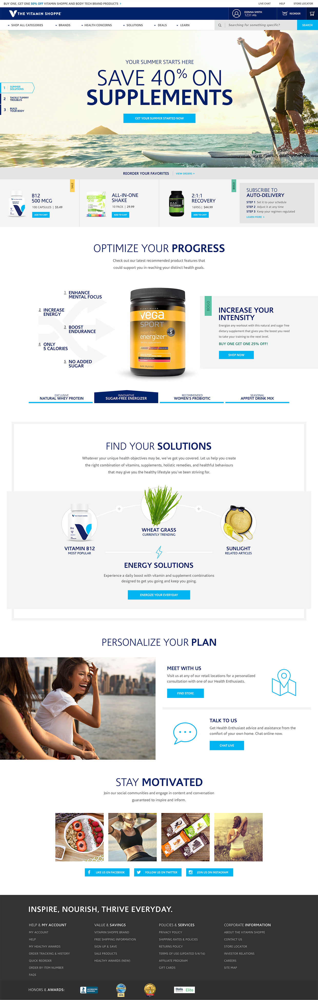
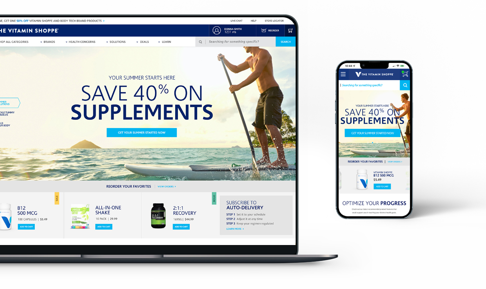
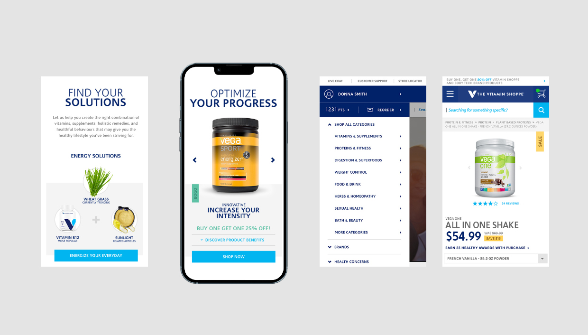

With the continuous growth of online giants like Amazon and Walmart, consumer mentality has shifted to find the cheapest and most convenient provider. The Vitamin Shoppe needed to change from reacting to consumer demands to creating them in order to be a leader in its category.
We created new ways for users to navigate the site, providing the ability to quickly filter by user goals, rather than having to scroll through a vast amount of products and ingredients in search of right one.
Key interactions tools were created to assist users in their searches. The Innovation Table highlights new products while using bite-sized points to tell a more thorough story about their benefits. The Solutions Tool helps users bundle products together for better results and greater savings. The Goals Tool helps users discern between product categories, for example, finding protein to help put on mass, lose size or build lean muscle.
 